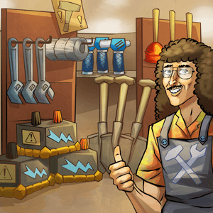

“Hardware Store” é a primeira música original de Poodle Hat, álbum lançado por “Weird Al” Yankovic em 2003. A canção descreve a inauguração de uma nova loja de ferragens no bairro e apresenta uma lista extremamente detalhada de produtos que podem ser encontrados no estabelecimento. O destaque está na velocidade com que Al enumera dezenas de ferramentas, materiais e outros artigos, transformando uma simples visita a uma loja em uma sequência musical frenética e bem-humorada.
A música começou como uma paródia de estilo, originalmente planejada para imitar o som da banda Presidents of the United States of America, com uma abordagem próxima do grunge. Durante o processo de gravação, porém, a composição evoluiu e se transformou em uma música original com características de speed metal. A ideia também pode ter recebido influência de “Life Is a Rock (But the Radio Rolled Me)”, da banda Reunion, conhecida por sua letra cantada em ritmo acelerado. Em uma entrevista à revista GQ, Yankovic preferiu não revelar qual artista havia inspirado a ideia inicial, brincando que essa informação acabaria aparecendo como curiosidade na própria Wikipédia.
A lista de produtos apresentada na música contém 61 itens, incluindo marcas conhecidas de pilhas, como Duracell e Energizer. A introdução também chama a atenção pelo ritmo dos sons de ferramentas, que podem ter sido inspirados pela música “Money”, do Pink Floyd. Outro detalhe recorrente no repertório de Al aparece na frase sobre o vigésimo sétimo cliente ganhar gratuitamente um martelo de bola, uma referência ao número 27, que surge em outras músicas do artista.
Apesar de ser uma das faixas mais memoráveis de Poodle Hat, “Hardware Store” apresenta um desafio considerável para apresentações ao vivo. O próprio Yankovic afirmou que não pretendia cantá-la em concertos, principalmente devido à velocidade e à dificuldade de executar a letra sem perder o ritmo. Com sua mistura de humor cotidiano, instrumentos acelerados e uma lista quase interminável de mercadorias, a música transforma uma loja de ferragens comum em uma experiência musical caótica e divertida.
Nothin' ever (ever) happens in this town
Feelin' low down (down), not a lot to do around here
I thought that I would go right out of my mind
Until a friend told me the news
He said, "Hey! You know that vacant lot
Right beside the gas station? Well somebody bought it
And on that spot they're gonna build a shop
Where we can go buy bolts and screws"
Since then I've been walking on air (air)
I can barely brush my teeth or comb my hair
'Cause I'm so excited and I really don't care
I've been waiting since last June
For this day to finally arrive
I'm so happy (happy) now just to be alive
'Cause any minute now I'm gonna be inside
Well, I hope they open soon
I can't wait, (no I) I can't wait (oh when)
When are they gonna open up that door?
I'm goin' (yes I'm) goin', I'm a-goin' to the
Goin' to the (hard) ware I'm goin', really goin' to the
Goin' (hard) I'm goin' to the (hard) oh yes I'm goin' to the
Hardware store
In my sleeping bag I camped out overnight
Right in front of the store, then as soon as it was light out
I pressed my nose right up against the glass
You know, I had to be first in line
Gonna get me a flashlight and a broom
Want a pair of pliers for every single room of my house
See those hacksaws? Very, very soon
One of them will be all mine
Guys with nametags walking down the aisles
Rows of garden hoses that go on for miles and miles
Brand new socket wrenches in a plethora of styles
All arranged alphabetically
And they're doing a promotional stunt
There's a great big purple sign out front
That says every 27th customer
Will get a ball peen hammer free
I can't wait, (no I) I can't wait (oh when)
When are they gonna open up that door?
I'm goin' (yes I'm) goin', I'm a-goin' to the
Goin' to the (hard) ware I'm goin', really goin' to the
Goin' (hard) I'm goin' to the (hard) oh yes I'm goin' to the
Hardware store
I'm goin' (yes I'm) goin', I'm a-goin' to the
Goin' to the (hard) ware I'm goin', really goin' to the
Goin' (hard) I'm goin' to the (hard) oh yes I'm goin' to the
Hardware store
Would you look at all that stuff.
They've got allen wrenches, gerbil feeders, toilet seats, electric heaters
Trash compactors, juice extractors, shower rods and water meters
Walkie-talkies, copper wires, safety goggles, radial tires
BB pellets, rubber mallets, fans and dehumidifiers
Picture hangers, paper cutters, waffle irons, window shutters
Paint removers, window louvers, masking tape and plastic gutters
Kitchen faucets, folding tables, weather stripping, jumper cables
Hooks and tackle, grout and Spackle, power foggers, spoons and ladles
Pesticides for fumigation, high-performance lubrication
Metal roofing, waterproofing, multi-purpose insulation
Air compressors, brass connectors, wrecking chisels, smoke detectors
Tire gauges, hamster cages, thermostats and bug deflectors
Trailer hitch demagnetizers, automatic circumcisers
Tennis rackets, angle brackets, Duracells and Energizers
Soffit panels, circuit breakers, vacuum cleaners, coffee makers
Calculators, generators, matching salt and pepper shakers
I can't wait, (no I) I can't wait (oh when)
When are they gonna open up that door?
I'm goin' (yes I'm) goin', I'm a-goin' to the
Goin' to the (hard) ware I'm goin', really goin' to the
Goin' (hard) I'm goin' to the (hard) oh yes I'm goin' to the
Hardware store
I'm goin' (yes I'm) goin', I'm a-goin' to the
Goin' to the (hard) ware I'm goin', really goin' to the
Goin' (hard) I'm goin' to the (hard) oh yes I'm goin' to the
Hardware store
I'm goin' (yes I'm) goin', I'm a-goin' to the
Goin' to the (hard) ware I'm goin', really goin' to the
Goin' (hard) I'm goin' to the (hard) oh yes I'm goin' to the
Hardware store